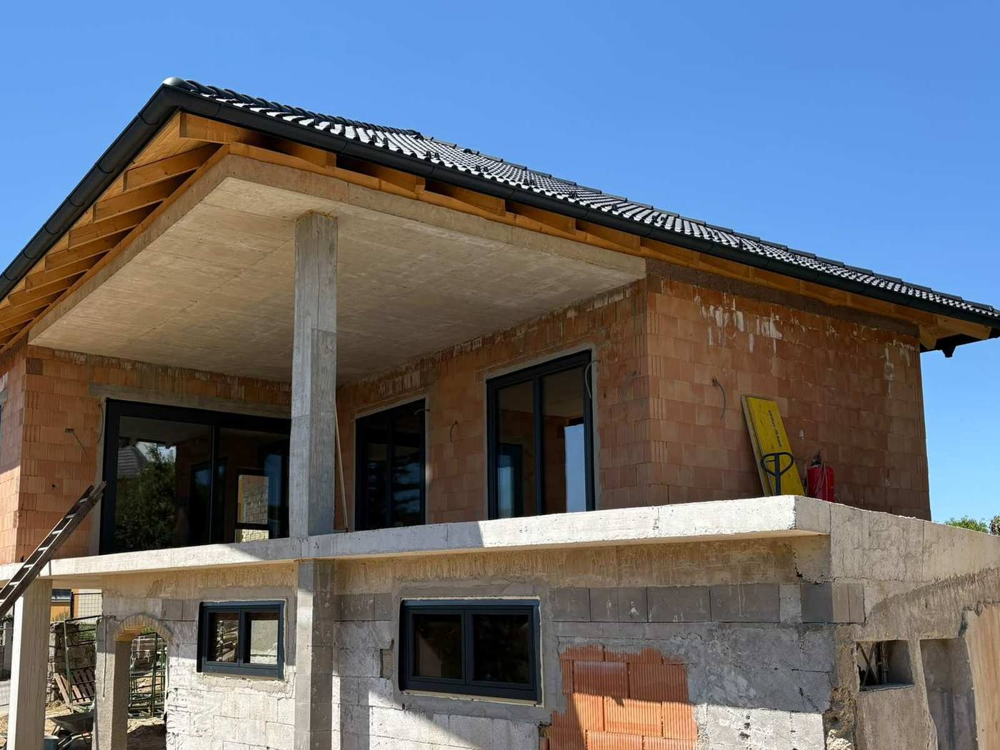

Fensterpreise 2026 in Österreich: Was kosten neue Fenster wirklich?
Die meisten Fensterhersteller nennen keine Preise, bevor ein Verkäufer bei Ihnen war. Wir machen es anders: Hier finden Sie echte Preise aus unserem Rechner – nach Größe, Verglasung und Material – sowie Richtwerte für Montage und ein Beispiel für ein ganzes Haus.

Ein weißes Kunststofffenster 100 × 150 cm kostet ab 276 € mit Zweifachverglasung und ab 328 € mit Dreifachverglasung. Pro Quadratmeter sind das 180 bis 240 €. Aluminiumfenster kosten etwa das Dreifache. Für zehn Fenster eines Einfamilienhauses inklusive Montage sollten Sie 6 000 bis 7 500 € einplanen.
Preistabelle: Fensterpreise nach Größe
Die folgenden Preise stammen direkt aus unserem Fensterrechner. Profil Drutex IGLO 5 (70 mm, 5 Kammern) bzw. IGLO Energy (82 mm, 6 Kammern), Beschlag MACO, weiß, ohne Zubehör. Alle Flügel Dreh-Kipp.
| Element | Maß (B × H) | 70 mm Zweifach Ug 1,1 | 70 mm Dreifach Ug 0,6 | 82 mm Dreifach Ug 0,5 | Aluminium Dreifach Ug 0,5 |
|---|---|---|---|---|---|
| Kellerfenster, 1 Flügel | 600 × 600 | 130 € | 141 € | 189 € | 453 € |
| Küchenfenster, 1 Flügel | 800 × 1000 | 191 € | 217 € | 271 € | 638 € |
| Fenster, 1 Flügel | 1000 × 1200 | 240 € | 280 € | 336 € | 784 € |
| Fenster, 1 Flügel | 1000 × 1500 | 276 € | 328 € | 384 € | 894 € |
| Fenster, 2 Flügel (Stulp) | 1200 × 1400 | 388 € | 439 € | 541 € | 1 351 € |
| Fenster, 2 Flügel (Stulp) | 1500 × 1500 | 452 € | 525 € | 625 € | 1 549 € |
| Fenster, 3 FelderDreh-Kipp · fest · Dreh-Kipp | 2100 × 1400 | 576 € | 675 € | 802 € | 1 857 € |
| Balkontür, 1 Flügel | 900 × 2100 | 329 € | 394 € | 455 € | 1 053 € |
| Balkontür, 2 Flügel (Stulp) | 1500 × 2100 | 617 € | 721 € | 825 € | 1 921 € |
| Festverglasung | 1000 × 1500 | 171 € | 232 € | 224 € | 570 € |
Brutto inkl. 20 % MwSt., ohne Lieferung und Montage. Richtpreise, Stand Oktober 2026 – alle Preise bereits mit dem laufenden Aktionsrabatt von 15 %. Andere Maße rechnen Sie in 30 Sekunden selbst: zum Fensterrechner.
Fensterpreise pro Quadratmeter
Für eine erste Schätzung reicht die Fensterfläche:
- Kunststofffenster: 180 bis 240 € pro m² – Zweifachverglasung am unteren, Dreifachverglasung am oberen Ende.
- Kunststofffenster 82 mm: 240 bis 280 € pro m².
- Aluminiumfenster: 550 bis 700 € pro m².
Wichtig: Kleine Fenster sind pro Quadratmeter deutlich teurer als große. Ein Kellerfenster 60 × 60 cm kostet 141 € – das sind fast 400 € pro m², weil Rahmen, Flügel und Beschlag unabhängig von der Glasfläche anfallen. Rechnen Sie deshalb nie ein ganzes Haus nach einem einzigen Quadratmeterpreis.
Was den Preis bestimmt
1. Teilung – jeder Flügel kostet extra
Ein einflügeliges Fenster 1000 × 1500 mm kostet 328 €, ein zweiflügeliges Stulpfenster 1200 × 1400 mm mit fast gleicher Fläche 439 €. Der zweite Flügel bringt Beschlag, Rahmenprofil und Arbeit mit. Eine Festverglasung ohne Flügel ist dagegen um rund 30 % günstiger als ein öffenbares Fenster gleicher Größe.
2. Verglasung – zwei oder drei Scheiben
Dreifachverglasung kostet im 70-mm-Profil 10 bis 20 % mehr als Zweifachverglasung. Dafür sinkt der Wärmedurchgang des ganzen Fensters (Uw) beim Fenster 1000 × 1500 mm von 1,32 auf 0,92 W/m²·K – also um 30 %. Für Wohnräume und Neubauten ist Dreifachverglasung heute Standard; Zweifachverglasung reicht für Keller, Garage oder Nebengebäude.
3. Profil – 70 oder 82 mm Bautiefe
Das 82-mm-Profil mit 6 Kammern kostet 15 bis 25 % mehr als das 70-mm-Profil (bei kleinen Fenstern auch mehr) und erreicht mit der Verglasung Ug 0,5 Uw-Werte um 0,85 W/m²·K. Es lohnt sich bei Neubau und bei Häusern mit Wärmedämmfassade. Beim Fenstertausch im Altbau ist das 70-mm-Profil in den meisten Fällen die bessere Wahl: günstiger und leichter in alte Laibungen einzupassen.
4. Material – Kunststoff oder Aluminium
Aluminiumfenster kosten das 2,7- bis 3,2-Fache eines Kunststofffensters gleicher Größe. Alu ist schlanker, steifer und für große Elemente wie Portale und Hebeschiebetüren oft die einzige Option. Beim Wärmeschutz ist Kunststoff sogar im Vorteil: Ein Fenster 1000 × 1500 mm erreicht in Kunststoff mit Dreifachverglasung Uw 0,92, in Aluminium 1,21 W/m²·K – Aluminium leitet Wärme besser, auch mit thermischer Trennung.
5. Farbe
Weiß ist am günstigsten. Eine Folie in Anthrazit, Golden Oak oder Grau nur außen kostet rund 12 % Aufpreis, beidseitig rund 20 %. Bei Aluminium ist die Farbe eine Pulverbeschichtung und wird pro Element verrechnet.
6. Zubehör
Insektenschutz, Sprossen, Rollläden, Zip-Screens, verdeckt liegende Bänder, abschließbare Griffe oder Sicherheitsglas erhöhen den Preis je nach Ausführung. Im Rechner können Sie jede Option einzeln an- und abwählen und sehen den Aufpreis sofort.
Was kostet die Montage?
Die Preise oben gelten für die Fenster ohne Einbau. Für Demontage der alten Fenster, Montage nach ÖNORM B 5320 (innen dampfdicht, außen winddicht abgedichtet) und Entsorgung rechnen Sie je nach Größe und Einbausituation mit 200 bis 400 € pro Fenster. Balkontüren, große Elemente und Fenster in oberen Stockwerken liegen darüber.
Wie der Tausch im Altbau abläuft und was er komplett kostet, lesen Sie im Beitrag Fenstertausch im Altbau: Kosten und Ablauf.
Nicht enthalten sind Fensterbänke innen und außen und das Verputzen der Laibungen – diese Arbeiten werden je nach Zustand der Wand separat angeboten. Beim Neubau mit vorbereiteten Öffnungen ist die Montage günstiger als beim Tausch im Altbau.
Die Lieferung in ganz Österreich ist ab einem Auftragswert von 4 200 € netto kostenlos, darunter nach Vereinbarung. Die Fenster werden auf Paletten mit einem Kranfahrzeug direkt an der angegebenen Adresse abgeladen.
Beispielrechnung: Einfamilienhaus mit 10 Fenstern
Ein typisches Haus mit Fenstertausch: sechs einflügelige Fenster 1000 × 1500, zwei zweiflügelige Fenster 1200 × 1400 und zwei Balkontüren 900 × 2100 – Kunststoff weiß, 70 mm, Dreifachverglasung.
| Position | Stück | Einzelpreis | Summe |
|---|---|---|---|
| Fenster 1000 × 1500, Dreh-Kipp | 6 | 328 € | 1 968 € |
| Stulpfenster 1200 × 1400 | 2 | 439 € | 878 € |
| Balkontür 900 × 2100 | 2 | 394 € | 788 € |
| Fenster gesamt | 3 634 € | ||
| Demontage, Montage, Entsorgung (Richtwert) | 10 | 250–350 € | 2 500–3 500 € |
| Gesamt inkl. Montage | ca. 6 100–7 100 € |
Brutto inkl. 20 % MwSt. Ohne Fensterbänke und Laibungsarbeiten. Die Lieferung ist bei diesem Auftragswert nicht kostenlos und wird separat vereinbart.
Förderung beim Fenstertausch
Für den Tausch alter Fenster im Zuge einer thermischen Sanierung gibt es in Österreich Förderungen von Bund und Ländern. Die Bedingungen – vor allem der geforderte Uw-Wert und die Mindestinvestition – ändern sich fast jedes Jahr. Prüfen Sie die aktuellen Voraussetzungen vor der Bestellung; mit Dreifachverglasung erfüllen unsere Fenster die üblichen Uw-Grenzwerte.
Maße eingeben, Profil und Verglasung wählen – Sie sehen den Preis sofort, ohne Verkäufer und ohne Anmeldung.
Häufige Fragen zu Fensterpreisen
Was kostet ein Fenster 100 × 150 cm?
Ein weißes Kunststofffenster 1000 × 1500 mm, Dreh-Kipp, kostet mit Zweifachverglasung rund 276 € und mit Dreifachverglasung rund 328 € brutto – ohne Lieferung und Montage. In Aluminium liegt dasselbe Fenster bei rund 894 €.
Was kosten 10 neue Fenster für ein Einfamilienhaus?
Zehn typische Kunststofffenster mit Dreifachverglasung kosten rund 3 600 € brutto. Mit Demontage und Montage sind etwa 6 000 bis 7 500 € zu rechnen – siehe Beispielrechnung oben.
Wie viel teurer ist Dreifachverglasung?
Im 70-mm-Profil rund 10 bis 20 % mehr als Zweifachverglasung. Der Uw-Wert eines Fensters 1000 × 1500 mm sinkt dabei von 1,32 auf 0,92 W/m²·K.
Was kosten Fenster pro Quadratmeter?
Kunststofffenster etwa 180 bis 240 € pro m², Aluminiumfenster etwa 550 bis 700 € pro m² – brutto, ohne Montage. Kleine Fenster sind pro m² teurer als große.
Was ist im Fensterpreis nicht enthalten?
Montage und Demontage, Fensterbänke innen und außen, das Verputzen der Laibungen und die Lieferung bei Aufträgen unter 4 200 € netto. Diese Positionen werden separat vereinbart.